1 Introduction
Vectors are fundamental objects central to the modern scientific description of natural phenomena. They occur in the mathematical representation of virtually every area of inquiry, either directly in terms of the phenomenon of interest (e.g. fluid flow) or indirectly in terms of objects used to investigate or analyze those phenomena (e.g. gradients). However, the visualization of vector fields, vector-valued functions, is surprisingly under supported in the R language. In this section we introduce the basic problem of visualizing vector fields and R’s current support for visualizing them. We begin with some definitions and notation.
Depending on the context, vectors can be defined in many different ways. In ggvfields, all vectors are two dimensional, and thus typically represented in Cartesian coordinates as pairs of real numbers. This can itself take several forms:
\[\mathbf{u} = (x, y) = x\begin{bmatrix}1\\0\end{bmatrix} + y\begin{bmatrix}0\\1\end{bmatrix} = x\mathbf{e}_{1} + y\mathbf{e}_{2}\]
where \(x\) and \(y\) are the components of the vector along the \(x\)- and \(y\)-axes, respectively, and \(\mathbf{e}_{1}\) and \(\mathbf{e}_{2}\) represent the standard basis vectors of \(\mathbb{R}^{2}\). Vectors can also be expressed in polar coordinates \((r,\theta)\), where the magnitude of the vector \(\mathbf{u}\), denoted \(\|\mathbf{u}\| = r\), is its (Euclidean) length and the direction is the angle \(\theta\) the vector forms with the positive \(x\)-axis, here ranging from \((-\pi,\pi]\). The conventional transformation to polar form and back is
\[
\begin{array}{lcl}
r = r(x, y) = \sqrt{x^{2} + y^{2}} = \|\mathbf{u}\| &\qquad& x = x(r, \theta) = r \cos \theta\\
\theta = \theta(x, y) = \mbox{see below} &\qquad& y = y(r, \theta) = r \sin \theta,
\end{array}
\]
with
\[\theta(x, y) = \mbox{atan2}(y,x) = \begin{cases}
\tan^{-1}(\frac{y}{x}) & x > 0 \\
\tan^{-1}(\frac{y}{x}) + \pi & x < 0, y \geq 0 \\
\tan^{-1}(\frac{y}{x}) - \pi & x < 0, y < 0 \\
\frac{\pi}{2} & x = 0, y > 0 \\
-\frac{\pi}{2} & x = 0, y < 0 \\
\mbox{undefined} & x = 0, y = 0.
\end{cases}\]
As the notation suggests, this function is implemented in R as atan2(y,x) . Similarly, it is often helpful to adhere to a notational convention for vectors. As used above, when we adopt the perspective of an object being a vector we typeset it with an upright bold font, e.g. \(\mathbf{u}\) or \(\mathbf{e}_{1}\).
Vectors and functions are often found in the same contexts. The standard mathematical notation for a function is \(f: \mathcal{U} \to \mathcal{V}\), where \(\mathcal{U}\) is the domain and \(\mathcal{V}\) is the codomain, and the notation communicates that every element \(u \in \mathcal{U}\) is assigned by \(f\) exactly one corresponding element of \(\mathcal{V}\), which is typically denoted \(f(u) = v \in \mathcal{V}\). Alternatively, if we wish to focus on the association of \(u\) to \(v\) by \(f\), we write \(u \stackrel{f}{\longmapsto} v = f(u)\) and say that \(u\) is mapped to \(v\) by \(f\). The graph of \(f\) is the set \(\mathcal{G}(f) = \left\{(u,v) \in \mathcal{U}\times\mathcal{V}: u \in \mathcal{U}~\mbox{and}~v = f(u)\right\}\).
If \(\mathcal{U}\) is a collection of vectors and \(\mathcal{V}\) is \(\mathbb{R}\), we say that \(f\) is a scalar field. It is a scalar-valued function of a vector argument, so we may write \(f(\mathbf{u})\). For example, if \(\mathcal{U} = \mathbb{R}^{2}\), \(f\) assigns to every point in the plane a number, and we may visualize this assignment by coloring the points of the \(xy\)-plane, e.g. a raster plot. This covers the three dimensional nature of the function: the two spatial dimensions (the \(x\)- and \(y\)-axes) visually communicate \(\mathbf{u} = (x,y)\), and the color aesthetic visually communicates the value assigned to \(\mathbf{u}\) by the function \(f\). The color aesthetic is provided with a legend so that the viewer can relate the color observed to the numeric value of \(f(\mathbf{u}) = f(x,y)\). This is an alternative way to visualize the graph of \(f\) \(\mathcal{G}(f) = \left\{(x,y,z) \in \mathbb{R}^{3}: x, y \in \mathbb{R}^{2}~\mbox{and}~z = f(x,y)\right\}\) that avoids three spatial dimensions.1
If \(\mathcal{U}\) \(\mathcal{V}\) are collections of vectors, we say that \(f\) is a vector field; it is a vector-valued function of a vector argument. We often use vector notation to emphasize this point, e.g. \(\mathbf{f}(\mathbf{u})\). Of course, if \(\mathcal{U} = \mathbb{R}^{2}\) and \(\mathcal{V} = \mathbb{R}^{2}\) as in this work, we may write this in myriad ways: \[\mathbf{f}(\mathbf{u}) = \begin{bmatrix}f_{x}(\mathbf{u})\\f_{y}(\mathbf{u})\end{bmatrix} = \begin{bmatrix}f_{x}(x,y)\\f_{y}(x,y)\end{bmatrix} = \mathbf{f}(x,y),\] and we take this liberty as convenient for the setting at hand. Here \(f_{x}\) and \(f_{y}\) are called the component functions of the vector field \(\mathbf{f}\). In particular, they are not the partial derivatives of a scalar field \(f\), although the same notation is commonly used for that purpose. Any of the above formulations may be preferable in different contexts to highlight different perspectives, but the overall point is the same: vector fields assign to each point in the plane a vector.
Unlike scalar fields, which may be visualized via their graph in three dimensions using a tool such as plotly or colored raster as with base or ggplot2, vector fields are more challenging to visualize. It is the purpose of ggvfields to help users visualize such functions in R.
2 Visualizing vectors and vector fields in base R
Visualizing vector fields is a common task in various scientific and engineering disciplines, but it is surprisingly under-supported in the R ecosystem. After some initial reflection, visualizing vector fields is rather easy in concept but complex in details. It can also be error-prone and time-consuming when coding from scratch. In this section we review the standard strategy to do it in R using base graphics and defer a discussion about other plotting systems in a later section. We start with visualizing vector data.
2.1 Plotting vector data
As a typical applied scenario, consider wind vectors observed in various locations \(\mathbf{u}_{i} = (x_{i}, y_{i})\) across a spatial extent, where the wind measurements are taken in polar coordinates of speed and direction. Here is a synthetic example of such a dataset:
set.seed(1234)
n <- 10
# generate wind data in polar coordinates
data <- data.frame(
"x" = rnorm(n),
"y" = rnorm(n),
"dir" = runif(n, -pi, pi), # angle, in radians
"spd" = rchisq(n, df = 2) # speed
)
data |> round(digits = 2) |> head() x y dir spd
1 -1.21 -0.48 0.34 3.55
2 0.28 -1.00 0.92 2.19
3 1.08 -0.78 -1.18 2.99
4 -2.35 0.06 0.77 10.81
5 0.43 0.96 -1.07 3.45
6 0.51 -0.11 0.01 3.91A common way to visualize this kind of data places translated arrows at each evaluation point, with their tails at each of the observed locations \(\mathbf{u}_{i} = (x_{i},y_{i})\) and heads at the points \(\mathbf{u}_{i} + \mathbf{f}(\mathbf{u}_{i}) = \big(x_{i} + f_{x}(x_{i},y_{i}), y_{i} + f_{y}(x_{i},y_{i})\big)\). However, since the Cartesian coordinate system is used in the representation of \(\mathbf{f}\)–as it is also in most plotting systems–we first need to convert the polar coordinates into Cartesian coordinates before we manually plot each vector. This is illustrated in Figure 1.
# transform into Cartesian coordinates for plotting
data <- data |> transform( "fx" = spd*cos(dir), "fy" = spd*sin(dir) )
data |> round(digits = 2) |> head() x y dir spd fx fy
1 -1.21 -0.48 0.34 3.55 3.35 1.17
2 0.28 -1.00 0.92 2.19 1.33 1.74
3 1.08 -0.78 -1.18 2.99 1.13 -2.76
4 -2.35 0.06 0.77 10.81 7.79 7.49
5 0.43 0.96 -1.07 3.45 1.66 -3.02
6 0.51 -0.11 0.01 3.91 3.91 0.05# plot data
with(data, {
plot( NULL, xlab = "x", ylab = "y", xlim = range(c(x, x + fx)), ylim = range(c(y, y + fy)) )
arrows(x, y, x + fx, y + fy, length = .10)
})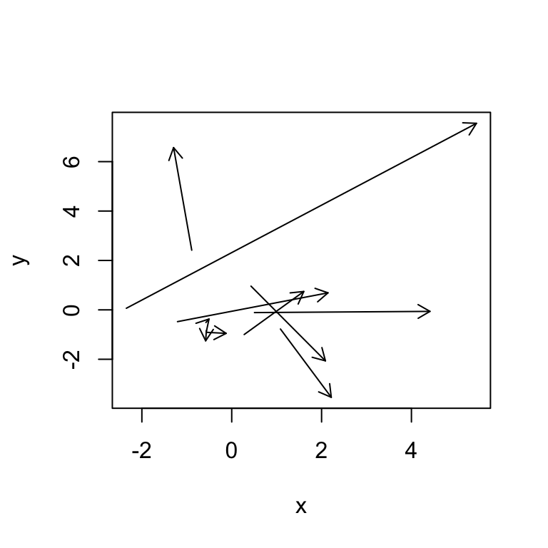
Figure 1: Plotting (raw) vector data in base R.
Note that plot() is used above to initialize the plot over a reasonable spatial extent. Using arrows() alone results in the (simplified) error Error in arrows(...): plot.new has not been called yet, a minor but not insignificant stumbling block to the uninitiated. More, simply calling plot.new() before arrows() doesn’t resolve the problem, as it cannot anticipate the spatial extent needed for the arrows.
As shown in the creation of Figure 1, plotting a collection of vectors in base R2 requires multiple steps: converting coordinates, manually defining plot limits to accommodate the entire arrow, and drawing each vector with arrows(). The approach is cumbersome and easy to mess up, and the result leaves a lot to be desired. These drawbacks are exacerbated when visualizing vector fields, as we see next.
2.2 Plotting a vector field
In other cases, we need to visualize a vector field generated by a function \(\mathbf{f}\). Myriad good examples exist: wind patterns over a geographic region, the flow of bodies of water, electric fields, etc. One example is provided by the simple rotational field \(\mathbf{f}(x,y) = (-y, x)\).
Visualizing a vector field \(\mathbf{f}\) is similar in many respects to plotting individual vectors; however, there are some important differences that suggest how one might want to modify the graphic previously described to make it better. To begin, and unlike the data case, obviously we can’t possibly visualize \(\mathbf{f}\) at all points \(\mathbf{u} = (x,y)\), so we have to choose which ones we would like to use to represent the whole of \(\mathbf{f}\). The domain is usually sampled in some way to generate values \(\mathbf{u}_{i} = (x_{i},y_{i})\) that can be visualized in the same way vector data is. A regular rectangular mesh over some spatial extent c(xmin, xmax) and c(ymin, ymax) is typical, and its values are stored in a data frame. Figure 2 is an example that illustrates the rotational field above.
# define vector field of single vector argument
f <- function(u) {
x <- u[1]; y <- u[2]
c(-y, x)
}
# make data frame grid with space for (fx(x,y), fy(x,y))
N <- 11
df <- expand.grid( "x" = seq(-1, 1, len = N), "y" = seq(-1, 1, len = N) )
df$fy <- df$fx <- NA # make placeholders for fx(x,y) and fy(x,y) values
# evaluate f(u) at each point and look at result
for (i in 1:nrow(df)) df[i,3:4] <- f( as.numeric(df[i,1:2]) )
head(df) x y fx fy
1 -1.0 -1 1 -1.0
2 -0.8 -1 1 -0.8
3 -0.6 -1 1 -0.6
4 -0.4 -1 1 -0.4
5 -0.2 -1 1 -0.2
6 0.0 -1 1 0.0# visualize using base R
with(na.omit(df), {
plot( NULL, xlab = "x", ylab = "y", xlim = range(x, x + fx), ylim = range(y, y + fy) )
arrows(x, y, x + fx, y + fy, length = .05)
})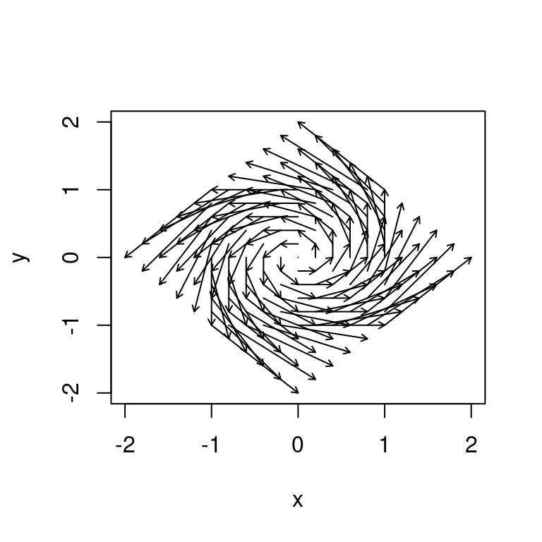
Figure 2: Vector fields can be visualized by sampling their domain, evaluating the vector field, and plotting the resulting vectors as translated arrows. Here the rotational field \(\mathbf{f}(x,y) = (-y,x)\) is visualized using base R graphics using the same strategy as Figure~\(\ref{fig:base-vector-data}\).
While Figure 2 is accurate in some technical sense, the overplotting of arrows and varying magnitudes of the vectors cause significant visual clutter and make it difficult to actually interpret the function. The overlapping of arrows obscures the finer details of the vector field, especially in regions of significant overplotting, and this is a mild example. The varying magnitudes of the vectors demand the axes accommodate the largest vectors, which can easily cause visual swamping of the smaller ones. Although it doesn’t happen in this example, it is in fact the more typical case. This one-two punch of overplotting and spatial extent swamping renders most of these graphics essentially unusable as a data visualization tool.
Visualizing vector data or vector fields is challenging in base R. The manual steps required to convert data, calculate vectors, and plot them are burdensome and error-prone; their remedies are, too. These challenges highlight the need for a more efficient and streamlined approach to vector field visualization. This is exactly what ggvfields provides: a more intuitive, efficient, flexible, attractive, and error-resistant solution for creating high-quality vector field visualizations within the ggplot2 framework.
3 Visualizing vectors and vector fields using ggvfields
3.1 Plotting vector fields with ggvfields
Let’s revisit the previous plots using ggvfields functions, in reverse. When presented with a vector field f, ggvfields plots the function directly, performing all the computations automatically behind the scenes. This is illustrated in Figure 3.
library("ggvfields")
ggplot() + geom_vector_field(fun = f, xlim = c(-1, 1), ylim = c(-1, 1))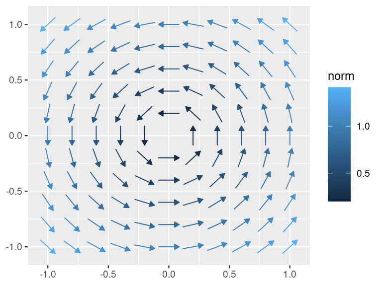
Figure 3: ggvfields’ geom_vector_field() visualizes vector fields. This plot is analogous to Figure \(\ref{fig:base-vector-field}\), but generated using ggvfields.
Most ggplot2 users will notice that geom_vector_field() mimics ggplot2’s built-in function geom_function(). This is a general design choice of ggvfields: where there is an analogy to be made with pre-existing functions in ggplot2, ggvfields functions lend significant deference to that implementation in order to be more intuitive to ggplot2 users. In that sense, ggvfields is a member of the growing suite of ggplot2 extension packages, such as ggdensity, ggdist, and patchwork . However, among extensions it is more on the infrastructural end, being intended for general purposes and not specific use cases, and contains tools that feel a bit more like what someone one might expect in ggplot2 itself.3
This relationship to ggplot2 can easily be seen through concrete examples. Plotting the function \(f(x) = \sin(x)\), for example, uses the syntax ggplot() + geom_function(fun = sin, xlim = c(0,2*pi)). The typical usage of geom_function() requires two arguments: fun and xlim. Internally, ggplot2 creates a uniform sequence of points \(x_{1}, \ldots, x_{n}\) from xlim[1] to xlim[2], evaluates fun at those points to obtain ordered pairs \((x_{1},f(x_{1})), \ldots, (x_{n},f(x_{n}))\), and draws small line segments between the points to visually simulate a smooth curve. This sequence of connected line segments is called a polyline. So conceptually geom_function() is simply a wrapper around geom_path(), the ggplot2 function used to plot polylines via grid’s polylineGrob(). \(n\) is set by the default argument in geom_function()4, n = 101.
Conceptually geom_vector_field() works just like geom_function() but with a ylim argument supporting the second input dimension. Thus, it accepts fun, xlim, and ylim. It then internally creates a regular rectangular grid of points as the Cartesian product of 2 uniform meshes on xlim and ylim, each of size n (defaulted to 11), evaluates fun on that grid to obtain vectors, and plots the vectors by wrapping the more basic geom_stream(), which is a ggvfields function we describe shortly. xlim and ylim default to c(-1,1), which allows us to drop them in the following examples to focus on other aspects of the code. geom_vector_field() also facilitates plotting vector fields over regular hexagonal meshes, which can be created manually with the grid_hex() function and passed into geom_vector_field() using the grid argument, or simply by stating grid = "hex". This is illustrated in Figure 4. In our experience, either of the grid types may be preferable for a given field. Users may also specify their own grids with a data frame of domain points using grid.
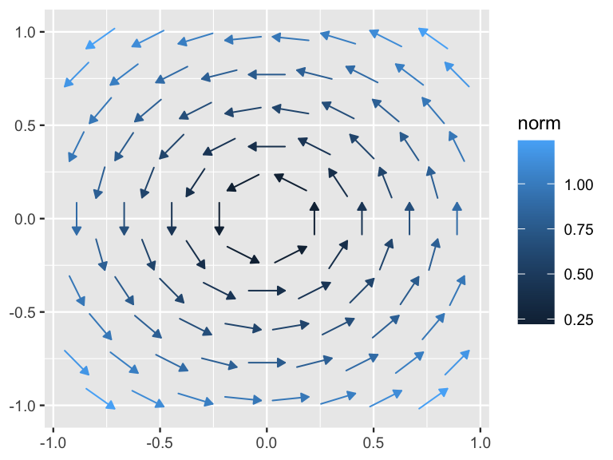
Figure 4: geom_vector_field() supports hexagonal grids by specifying grid = "hex".
In contrast to our made-from-scratch base vector field plot, geom_vector_field() doesn’t overplot. It achieves this by drawing arrows not from \(\mathbf{u}_{i}\) to \(\mathbf{u}_{i} + \mathbf{f}(\mathbf{u}_{i})\) but from \(\mathbf{u}_{i}\) to \(\mathbf{u}_{i} + L\,\operatorname{sign}\left(\mathbf{f}(\mathbf{u}_{i})\right)\), where \(L\) is a positive constant depending on xlim, ylim, n, and the grid type that is automatically chosen to avoid overplotting. Mathematically, \(L\) is the length of the arrows in plot, since the sign function normalizes \(\mathbf{f}(\mathbf{u}_{i})\), and these lengths are with reference to the domain’s data space. Setting normalize = FALSE and removing color can be used to create a plot similar to the one we observed with base graphics, see Figure 5.
ggplot() + geom_vector_field(fun = f, normalize = FALSE, color = "black")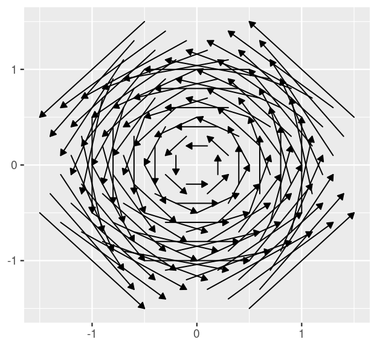
Figure 5: Setting normalize = FALSE and color = "black" results in a plot similar to the vector fields created with base’s arrow() in Figure \(\ref{fig:base-vector-field}\).
Besides being a mess, Figure 5 reveals another feature of the way ggvfields draws vector fields: that the arrows in ggvfields don’t run from \(\mathbf{u}_{i}\) to \(\mathbf{u}_{i} + L\,\operatorname{sign}\left(\mathbf{f}(\mathbf{u}_{i})\right)\), but rather from \(\mathbf{u}_{i} - \frac{L}{2}\,\operatorname{sign}\left(\mathbf{f}(\mathbf{u}_{i})\right)\) to \(\mathbf{u}_{i} + \frac{L}{2}\,\operatorname{sign}\left(\mathbf{f}(\mathbf{u}_{i})\right)\). They are centered at the evaluation point \(\mathbf{u}_{i}\). Disabled by setting center = FALSE, this is a default design choice that avoids drawing the eye away from the evaluation point \(\mathbf{u}_{i}\), which also can create visual artifacts such as the oblique look created when the normalized vectors are based at the evaluated points. This effect is illustrated in Figure 6.
library("patchwork")
p1 <- ggplot() + geom_vector_field(fun = f ) + ggtitle("center = TRUE")
p2 <- ggplot() + geom_vector_field(fun = f, center = FALSE) + ggtitle("center = FALSE")
p1 + p2 + plot_layout(guides = "collect")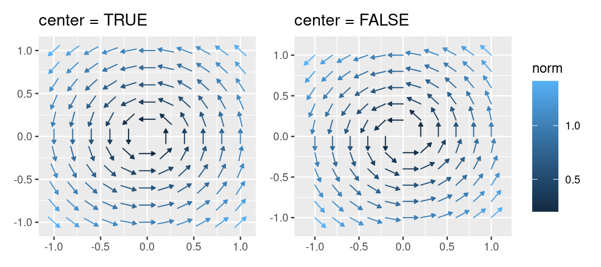
Figure 6: By default, vector glyphs (e.g. arrows) are centered over the point for which they are evaluated.
The reason that the (non-zero) vectors can be normalized despite them varying in magnitude is that their magnitudes are mapped to the color aesthetic and a legend is provided, consistent with the grammar of graphics . In other words, the move from arrows \(\mathbf{u}_{i} \pm \frac{1}{2}\mathbf{f}(\mathbf{u}_{i})\) to arrows \(\mathbf{u}_{i} \pm \frac{L}{2}\,\operatorname{sign}\left(\mathbf{f}(\mathbf{u}_{i})\right)\) is permissible because the other piece of information in \(\mathbf{f}(\mathbf{u}_{i})\), namely its magnitude \(\left\|\mathbf{f}(\mathbf{u}_{i})\right\|\), is contained in the legend. This provides an elegant albeit imperfect solution to the overplotting problem: instead of using position to communicate \(\left\|\mathbf{f}(\mathbf{u}_{i})\right\|\), use color. This may feel strange, because, all else being equal, differences in position tend to be easier to perceive than differences in color, but in this graphic, magnitudes are communicated by color rather than by length . This has advantages and disadvantages. One advantage is that overplotting is dramatically reduced; another is that vector direction can still be seen for small vectors, i.e. those that would be swamped by the big scale differences in previous graphics. A disadvantage is that small changes in magnitude (color) are potentially more difficult to perceive, especially with a simple monochrome scale such as the default ggplot2 scale. This is one situation where binned scales or highly polychromatic scales such as the spectral scale, which is visually richer but generally frowned upon in the data visualization community for various reasons, may in fact be helpful . Since ggvfields is built on top of ggplot2, these are easily manipulable with ggplot2’s scale functions; these are shown in Figure 7.
p1 <- ggplot() + geom_vector_field(fun = f)
p2 <- p1 + scale_color_viridis_b(n.breaks = 3)
p3 <- p1 + scale_color_gradientn(colors = rainbow(10), n.breaks = 6)
p2 + p3 & coord_equal()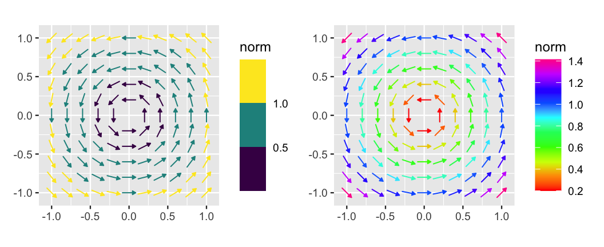
Figure 7: Polychromatic scales (right) can help visually discern relative magnitudes of the vector fields, as can using a binned scale (left). These are alternatives to Figure \(\ref{fig:centering-arrows}\) (left).
In cases where users want to avoid the color aesthetic, e.g. for black and white printing, ggvfields provides a second option: geom_vector_field2(). Instead of the arrows provided by geom_vector_field() that range \(\mathbf{u}_{i} \pm \frac{L}{2}\,\operatorname{sign}\left(\mathbf{f}(\mathbf{u}_{i})\right)\), geom_vector_field2() plots line segments from \(\mathbf{u}_{i}\) to \(\mathbf{u}_{i} + \alpha_{i}\,L\,\operatorname{sign}\left(\mathbf{f}(\mathbf{u}_{i})\right)\), where \(\alpha_{i} = \left\|\mathbf{f}(\mathbf{u}_{i})\right\|\Big/\max_{1 \leq i \leq n}\left\|\mathbf{f}(\mathbf{u}_{i})\right\|\) ranges from \(0\) to \(1\). We refer to the resulting vectors as being normalized and scaled. The biggest vector is mapped to the previous length \(L\), the length that avoids overplotting, and other vectors are mapped to a fraction of this length depending on their relative magnitudes. Direction is communicated by a dot at the tail point \(\mathbf{u}_{i}\) instead of an arrow, and the segments are not centered. This is illustrated in Figure 8.
ggplot() + geom_vector_field2(fun = f)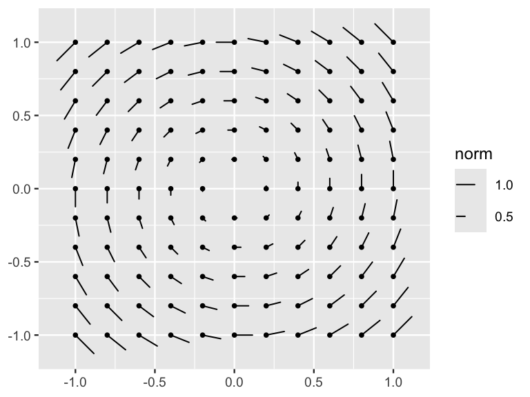
Figure 8: geom_vector_field2() provides a more print-friendly alternative to geom_vector_field().
Viewers associate the scaled lengths to norm values \(\left\|\mathbf{f}(\mathbf{u}_{i})\right\|\) via a legend. This is a bit tricky since length is not a ggplot2 aesthetic, so the lengths need to be computed at the grid level so that the segments are independent of the device size (or more generally aspect ratio). In other words, the absolute length of the line segments displayed in the legend should correspond exactly, not proportionately, to the line segments displayed on the graphic, irrespective of the size of the device. It is easy to verify that this is the case for geom_vector_field2(), this is illustrated in Figure 9.
# make the plot to be resized
p <- ggplot() + geom_vector_field2(fun = f, n = 5)
# draw the plot in two different sizes
(p + p & theme(plot.background = element_rect(color = "gray75"))) +
plot_layout(design = c(area(1,1,1,1), area(2,2,3,3)))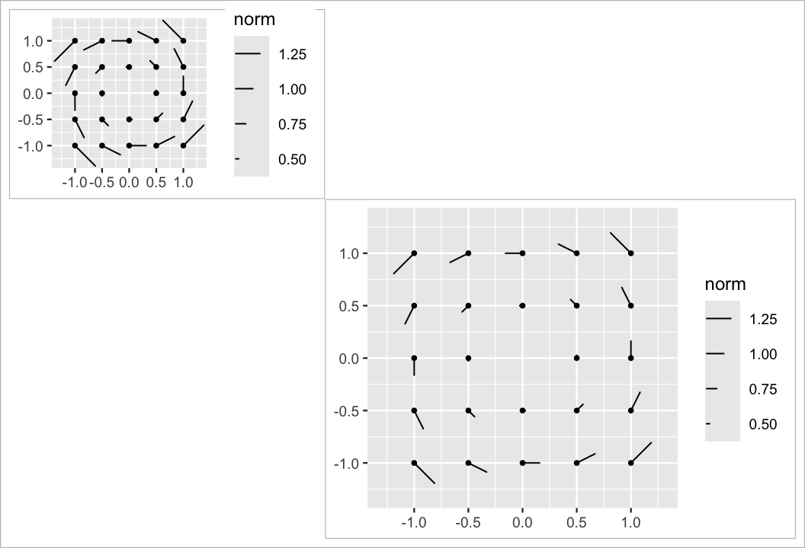
Figure 9: The length aesthetic of geom_vector_field2() is independent of aspect ratio, which defaults to the size of the device.
These plots look nice but carry with them similar perceptual problems to the color version geom_vector_field(). While the difficulty of geom_vector_field() is associating shades of color to a point on a color bar, the difficulty of geom_vector_field2() is associating the lengths of small line segments in the plot to line segments in the legend, mentally interpolating or even extrapolating for line segments whose lengths are not explicitly in the legend, which is of course challenging. This is further complicated by the requirement that the lengths of the line segments in the graphic need to correspond exactly to those in the legend for reasons described above, which limits how long the line segments can be in the legend and forces them to be smaller than might be preferred. Setting them longer in the legend may make differences in the graphic easier to perceive, but it also has the consequence of making the legend enormous. This is illustrated in Figure 10.
ggplot() +
geom_vector_field2(fun = f, grid = "hex") +
scale_length_continuous(max_range = 1.5) # max_range = L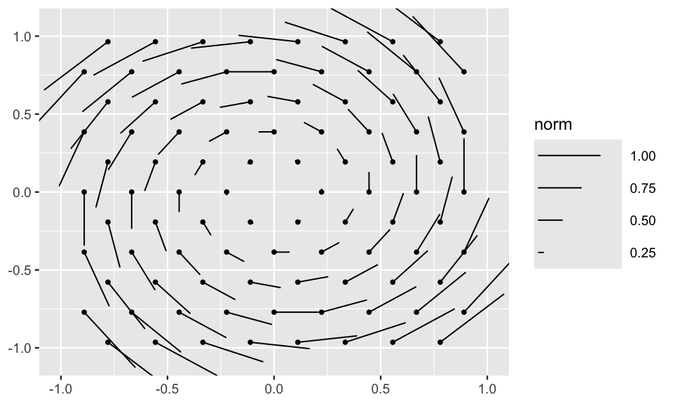
Figure 10: The length aesthetic can be modified with the new scale function scale_length_continuous().
Obviously, no strategy is perfect and comes without disadvantages. One of the objectives of ggvfields is to provide the user with a range of tools so they can decide what is appropriate for their particular situation.
3.2 Plotting vector data with ggvfields
geom_vector_field() and geom_vector_field2() have data analogues geom_vector() and geom_vector2() that can be used when analyzing vector data, and those functions follow the same general conventions with the same arguments. Instead of a function argument fun like geom_vector_field(), geom_vector() requires an x and y aesthetic representing \(\mathbf{u} = (x,y)\) and a corresponding vector value \(\mathbf{f}(\mathbf{u}) = (f_{x}(x,y), f_{y}(x,y))\) specified by aesthetics fx and fy, as in Figure 11.
p1 <- ggplot(data) + geom_vector (aes(x, y, fx = fx, fy = fy))
p2 <- ggplot(data) + geom_vector2(aes(x, y, fx = fx, fy = fy))
p1 + p2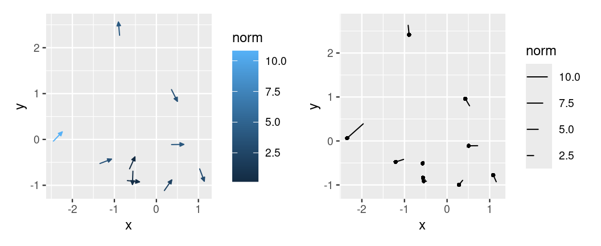
Figure 11: geom_vector() (left) and geom_vector2() (right) are analogues of geom_vector_field() and geom_vector_field2() that are used with data. Compare these graphics to Figure \(\ref{fig:base-vector-data}\).
Like their vector field counterparts, geom_vector() normalizes and centers by default and uses color and arrow heads, whereas geom_vector2() normalizes and scales with the length aesthetic, doesn’t center, and uses a tail point. As so much vector data is parameterized by angle/direction and magnitude/speed/distance/norm, the data values can also be specified in that parameterization with new aesthetics angle and norm. Thus, the following code produces precisely the same plot, see Figure 12. The calculations used to perform the transformation are precisely those discussed in the first section of this article.
p1 <- ggplot(data) + geom_vector (aes(x, y, angle = dir, distance = spd))
p2 <- ggplot(data) + geom_vector2(aes(x, y, angle = dir, distance = spd))
p1 + p2
Figure 12: geom_vector() (left) and geom_vector2() (right) accept vectors in polar coordinates.
Angles are assumed to be in radians (\((-\pi,\pi]\)) by default; however, if the user has angles in degrees they can use the simple helper aesthetic angle_deg.
We now turn to other strategies used to visualize vector fields, in particular, the use of streams.
4 Vector fields, calculus, and stream plots
Calculus is the field of mathematics that studies continuous change, typically represented by ordinary or partial differential equations, and vector fields naturally arise in these contexts. In this section we present these two additional perspectives, dynamical systems and conservative vector fields, for which ggvfields provides additional tools. While common in popular media and in some textbooks ranging from multivariate calculus to engineering to environmental science, these graphics are surprisingly rarely seen in statistical data science, probably because, like vector fields, the core object—-the stream-—is not directly observed as data. Consequently, there appears to be no base R implementation for many of these kinds of graphics.
4.1 Dynamical systems
One natural way of visualizing vector fields is to bend the arrows presented above as a kind of flow. Figure 13 provides an example of such a visualization enabled by ggvfields using geom_stream_field().
p1 <- ggplot() + geom_vector_field(fun = f)
p2 <- ggplot() + geom_stream_field(fun = f)
p1 + p2 & coord_equal()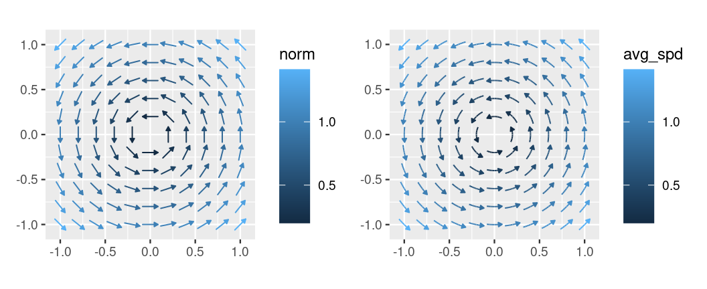
Figure 13: geom_stream_field() (right) creates stream line plots, a smoothly flowing alternative to geom_vector_field() (left).
A more formal mathematical description of this perspective, which we call the dynamical systems perspective, is helpful. Up until this point, we have simply viewed the vector field \(\mathbf{f}: \mathbb{R}^{2} \to \mathbb{R}^{2}\) as a function that accepts and returns a 2 dimensional vector. In the dynamic systems view, the component functions of the vector field \(\mathbf{f}(x,y) = \big(f_{x}(x,y), f_{y}(x,y)\big)\) are understood to be the time derivatives of the \(x\)- and \(y\)-coordinates of the position of a particle at time \(t\), i.e. \(\big(x(t),y(t)\big)\). Like the presentation in the introduction, this can be written in many ways. One common way is \(x' = f_{x}(x,y)\) and \(y' = f_{y}(x,y)\), where \(x\) is shorthand for \(x(t)\) and similarly for \(y\). More explicitly, we could write \[\begin{eqnarray*} x'(t) &=& f_{x}\big(x(t),y(t)\big) \\ y'(t) &=& f_{y}\big(x(t),y(t)\big) \end{eqnarray*}\] In this view, the vector field is a function on a phase space, the phase plane often studied in a first semester differential equations course. The vector field can be thought of as the velocity field of a particle moving in time, and the trajectory of the particle, a directed path we call a stream, can be visualized as the image of a function \(\mathbf{u}(t) = \big(x(t),y(t)\big)\) over a period of time \([0,T]\) time by solving the system of differential equations from an initial point \(\mathbf{u}(0) = \mathbf{u}_{0} = (x_{0},y_{0}) = \big(x(0), y(0)\big)\).5 In other words, streams can be computed by solving initial value problems (IVPs), which can be done with any number of numerical integrators in R.
As an example, Figure 14 plots the stream of a point originating at \(\mathbf{u}_{0} = (x_{0},y_{0}) = (-\frac{1}{2}, \frac{1}{2})\) through our system \(\mathbf{f}(x,y) = (-y,x)\) up to time \(T = 6\), computed numerically using deSolve . Clearly, the particle is moving in a circle. This is because the IVP, \(x' = -y\) and \(y' = x\) with \(x(0) = x_{0}\) and \(y(0) = y_{0}\), is solved when \(x(t) = x_{0}\cos(t) - y_{0}\sin(t)\) and \(y(t) = y_{0}\cos(t) + x_{0}\sin(t)\), and so starting at any point \(\mathbf{u}_{0} = (x_{0}, y_{0})\), the particle moves counter-clockwise in perfect circles with radius equal to the norm \(\mathbf{u}_{0} = \sqrt{x_{0}^{2} + y_{0}^{2}}\), since \(x(t)^2 + y(t)^2 = x_{0}^{2} + y_{0}^{2}\). Unfortunately, solutions cannot usually be obtained via nice closed form solutions, as is typically the case with applied problems.
library("deSolve")
# create a wrapper function for deSolve::ode(), scale = -1 runs system in reverse
f_wrapper <- function(scale = 1) {
function(t, y, parms, ...) list(scale*f(y))
}
# define a time scale over which to solve the system and the initial position
T <- 6
ts <- seq(0, T, .01)
u0 <- c(-1/2, 1/2)
# solve the ODE system and convert into a data frame, suppressing ode() messages
invisible(capture.output( ode_out <- ode(u0, ts, f_wrapper()) ))
df_ode <- ode_out |> as.data.frame() |> `names<-`( c("t","x","y") )
# superimpose the solution on the vector field
ggplot() +
geom_vector_field2(fun = f, xlim = c(-1,1), ylim = c(-1,1), alpha = .15) +
geom_stream(aes(x, y, t = t, color = t), data = df_ode)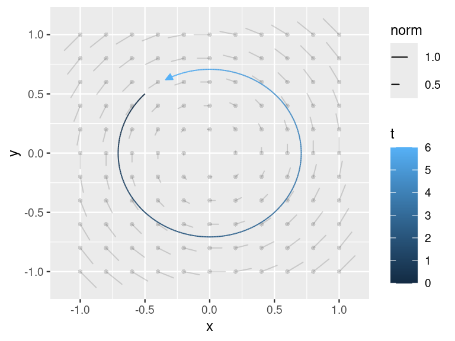
Figure 14: The streams in stream line plots are computed by solving IVPs initialized at points on a grid. Here a single stream is computed manually using deSolve’s ode().
In ggvfields streams are plotted as finely sampled polylines with geom_stream(), an analogue of geom_vector() requiring (typically) aesthetics x, y, and t, a new aesthetic.6 These curves \(\mathbf{u}(t)\) nominally range from \(t = 0\) to \(t = T\) starting from some initial point \(\mathbf{u}_{0}\). Of course, such curves exist originating from each point \(\mathbf{u} \in \mathcal{U}\) in the domain provided \(\mathbf{f}(\mathbf{u}) \neq \mathbf{0}_{2}\), so in the same way that visualizing a vector field using arrows involves restricting one’s view to a sampling of the domain, visualizing vector fields with streams is done by visualizing the trajectories of points initialized at different points on a sampling of the domain, and so the grid argument is available for stream plots as well. Since the system is autonomous,7 if the vector field is smooth8 the streams are guaranteed not to cross so long as they don’t cross singular points where the vector field vanishes; this is a consequence of the Picard–Lindelöf existence and uniqueness theorem . So while solutions starting from different grid points \(\mathbf{u}_{i}\) may merge if they are on the same solution path, overplotting due to crossing solutions typically cannot occur. Solutions can, of course, become close.
While visually appealing, creating stream plots presents myriad challenges. Most of these are related in some way to solving the IVPs. In ggvfields deSolve’s ode() is used for this purpose, since it uses a sophisticated general purpose solver appropriate for both non-stiff and stiff ODEs, and so abstracts away the problem of solving the IVP \(\mathbf{u}'(t) = \mathbf{f}(\mathbf{u})\) with \(\mathbf{u}(0) = \mathbf{u}_{0}\) from \(t = 0\) to \(T\). The question then is: how do we select \(T\)? The answer is by analogy with arrow-based graphics.
Viewed properly, the dynamical systems perspective can in fact generalize the arrow-based graphics made with geom_vector_field() in interesting ways related to specifying \(T\). First, the concept of normalization applies to stream plots in a way very similar to vector plots. With geom_vector_field(), setting normalize = TRUE scales the length of each vector to \(L\) (in the data space) and then maps the actual lengths (norms) to the color aesthetic. The analogue for streams is to track the movement of the particles from their inital point \(\mathbf{u}_{i}\) to a point \(T_{i}\) for which the length of the stream is \(L\). This is tricky for two reasons. First, the system of ODEs is parameterized–and more importantly solved with deSolve–by reference to \(T\), not the arc length \(L\). Second, there is no guarantee that streams originating from every point can go length \(L\) even if we let \(t\) grow to infinity. For example, if for some point in the stream \(\mathbf{f}(x,y) = \mathbf{0}_{2}\), called a sink, the trajectory will necessarily stop.
The first problem can be resolved in the following way. deSolve::ode() is generally designed to solve IVPs given \(\mathbf{u}_{0}\) and \(T\); however, it is a flexible function and our IVP can be reformulated into a system that solves what we want. For any smooth curve \(\mathbf{u}(t) = \big(x(t),y(t)\big)\), a basic fact from multivariate calculus is that the arc length of the curve is \(l(t) = \int_{0}^{t}\sqrt{x'(s)^{2} + y'(s)^{2}}\,ds\). By the fundamental theorem of calculus, this means that \(l'(t) = \sqrt{x'(t)^{2} + y'(t)^{2}}\), but since these are the component functions of the vector field, it is equivalent to expanding the system
\[x' = f_{x}(x,y), \quad y' = f_{y}(x,y), \quad \mbox{and} \quad l' = \sqrt{f_{x}(x,y)^{2} + f_{x}(x,y)^{2}}.\]
deSolve::ode() accepts a function rootfun that automatically terminates computing a solution when a certain condition is met, namely the root (zero) of a function is achieved. If this function is set to \(r(t,(x,y,l)) = l - L\), the solver stops when \(l = L\), i.e. the arc length of the stream is \(L\), a pre-specified length. In practice, \(L\) is automatically set in geom_stream_field() much like it is in geom_vector_field(), to avoid overplotting based on xlim, ylim, and n, or the grid in general.
In the arrows case, the norm of the vector was mapped to color. In the streams case, assuming all streams do grow to length \(L\), a similar quantity can be computed with the time \(T_{i}\) it takes for the stream to grow to length \(L\). Specifically, we can divide each stream \(L\) by the time \(T_{i}\) it took for that stream to reach \(L\) from the starting point \(\mathbf{u}_{i}\). The result is interpretable as the average speed the particle moved over the stream and is why the legend is labeled avg_spd in Figure 13. As a consequence, for constant vector fields, the arrow and stream versions of visualizing vector fields are in fact the same, as can be seen in Figure 15. For the second problem, if \(L\) is not achieved, we can simply take the length achieved and divide it by the time it took to reach that length (a stopping criteria similar to the root function will stop the stream if it doesn’t move). These streams will be shorter than the others.
constant_field <- function(u) c(3,4)
p1 <- ggplot() + geom_vector_field(fun = constant_field)
p2 <- ggplot() + geom_stream_field(fun = constant_field)
p1 + p2 & coord_equal()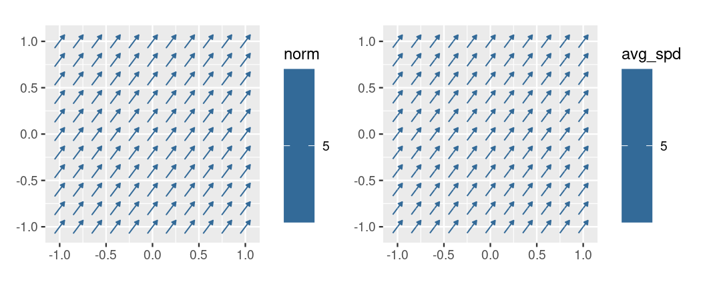
Figure 15: geom_stream_field() and geom_vector_field() produce the same plot for constant vector fields, although they are computed differently.
Taken together, the considerations above solve the normalization problem: by solving the system up to a pre-specified arc length \(L\). This same strategy can be used to center the streams. In the case of vectors, center = TRUE translated the arrow half way towards its tail, which centered the arrow on the evaluation point. This cannot be done with streams, since the stream would indicate a trajectory through which the center point doesn’t in fact move. However, a similar effect can be achieved by computing the solution up to length \(L/2\) in forward time and backwards up to \(L/2\) in reverse time, and then stitching the two streams together. To run the stream in reverse time, we simply run the negative of the original system \(-\mathbf{f}(x,y)\) in forward time. The result is an arc length \(L\) stream whose arc length center passes through \(\mathbf{u}_{i}\).
Creating an analogue to geom_vector_field2() is a bit trickier. The key feature of geom_vector_field2() is that it normalizes and scales each of the resulting arrows. A similar effect can be simulated with streams by (1) automatically determining an \(L\) as usual based on the grid; (2) computing all streams up to length \(L\); (3) identifying the smallest time required to achieve \(L\) across all the streams (i.e. the time associated with the fastest stream); and (4) cropping all streams back to their positions at this smallest time. The result is geom_stream_field2(), displayed in Figure 16. These look a bit different than those created with geom_vector_field2(), which did not use color. This is because the length aesthetic does not apply to geom_stream_field2(), and so without color the user has no way of knowing the magnitudes of the average speeds. However, an effect similar to geom_vector_field2() can be achieved by setting the color to "black". While this plot allows the determination of relative magnitudes of the field across the spatial extent, it does not communicate their absolute magnitudes.
p1 <- ggplot() + geom_vector_field2(fun = f)
p2 <- ggplot() + geom_stream_field2(fun = f)
p1 + p2 & coord_equal()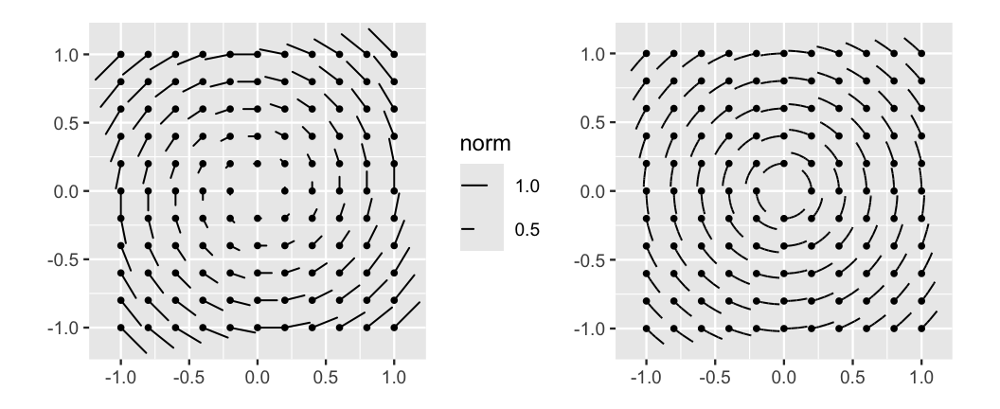
Figure 16: A stream version of geom_vector_field2() (left) is available as geom_stream_field2() (right).
The dynamical systems perspective admits another really nice graphic, which we informally refer to as comet plots. These are achieved by mapping l, the internally computed length variable \(l\), to the alpha aesthetic. Various modifications can be made, e.g. by modifying the rate of the fading by transforming l, however the basic graphic is quite appealing. We illustrate this in Figure 17.
ggplot() +
geom_stream_field(
fun = f, aes(alpha = after_stat(l)), arrow = NULL, L = .5,
grid = grid_hex(c(-1,1), c(-1,1), d = .2) |> purrr::modify(jitter, amount = .05)
) +
scale_alpha(range = c(0,1), guide = "none") +
coord_equal()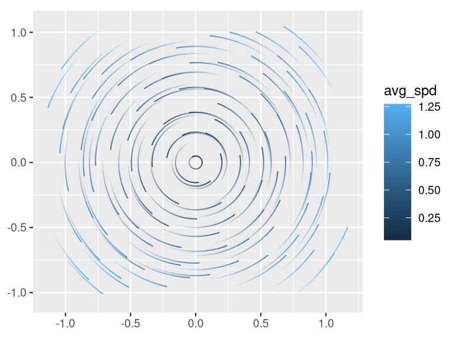
Figure 17: Stream plots can be faded by mapping the computed l aesthetic to alpha, which can be manipulated to accentuate the movement effect.
While the dynamical systems viewpoint provides valuable insight into vector fields as evolving particles in time, calculus offers another perspective: interpreting vector fields as gradients of scalar functions. We now turn our attention to that approach.
4.2 Gradient Fields
A second major lens through which vector fields often arise is through gradients of scalar fields. Specifically, if \(f: \mathbb{R}^2 \to \mathbb{R}\) is a scalar function, then its gradient is the vector field given by \(\nabla f: \mathbb{R}^{2} \to \mathbb{R}^{2}\), \((x,y) \stackrel{\nabla f}{\longmapsto} \big(\partial_{x} f(x,y), \partial_{y} f(x,y)\big)\). \(\nabla f(x,y)\) points in the direction of steepest increase of \(f\) at the point \((x,y)\), and its magnitude \(\|\nabla f(x,y)\|\) indicates how quickly \(f\) is changing there. This perspective is especially important in many applications, including physics and gradient-based optimization.
In ggvfields, gradient fields of scalar fields can be visualized directly using geom_gradient_field(). This function internally computes partial derivatives \(\partial_{x} f\) and \(\partial_{y} f\) of the scalar function \(f\) numerically using numDeriv and then plots those derivatives as vectors—just like geom_vector_field() . Streams can be plotted by setting type = "stream". These are illustrated on the scalar field \(f(x,y) = x^4 - 6 x^2 y^2 + y^4\) in Figure 18. Like other functions, geom_gradient_field() defaults to xlim = c(-1,1) and ylim = c(-1,1), and we use this fact in our examples to be highlight more salient features.
scalar_field <- function(u){
x <- u[1]; y <- u[2]
x^4 - 6*x^2*y^2 + y^4
}
p1 <- ggplot() + geom_gradient_field(fun = scalar_field)
p2 <- ggplot() + geom_gradient_field(fun = scalar_field, type = "stream")
p1 + p2 + coord_equal()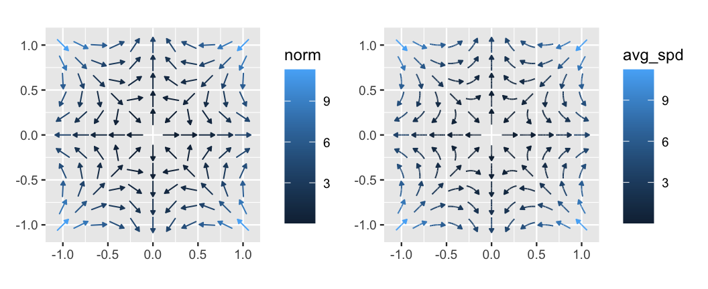
Figure 18: geom_gradient_field() can plot the gradient vector field of an input scalar function, computing it using numDeriv. Setting the type argument toggles between arrows and streams.
To help visually confirm the accuracy of the plot, it would be helpful to be able to superimpose the gradient field on top of a surface plot of its scalar field. This brings us to the concept of potentials.
4.3 Conservative vector fields and their potentials
A vector field that can be written as the gradient of a scalar field is called a conservative field. Such fields arise often in applications and derive from an underlying potential function \(\phi(x,y)\). Building on our discussion of gradients, we now show how ggvfields can visualize not only the gradient field of a scalar field, but the potential of a vector field.
Of course, not every vector field \(\mathbf{f}\) is conservative, so not every vector field has a corresponding potential. It is a standard fact of the calculus of two variables that if the coordinate functions \(f_{x}(x,y)\) and \(f_{y}(x,y)\) have continuous first partial derivatives, then the field is conservative precisely when \(\partial_{x}f_{y} = \partial_{y}f_{x}\) . Geometrically, this corresponds to the field having zero curl, which measures how much the field rotates around a point. A concept naturally belonging to three dimensions, the curl of a two-dimensional vector field is defined by embedding it into \(\mathbb{R}^{3}\) as \(\mathbf{f}^{\uparrow}(x,y,z) = (f_{x}(x,y), f_{y}(x,y),0)\) and then looking at the corresponding field’s curl: \(\operatorname{curl}(\mathbf{f}^{\uparrow}) = \nabla \times \mathbf{f}^{\uparrow} = (0, 0, \partial_{x}f_{y} - \partial_{y}f_{x})\). The curl of \(\mathbf{f}\) is then taken to be the scalar field \(\operatorname{curl}(\mathbf{f}) = \partial_{x}f_{y} - \partial_{y}f_{x}\). A reasonable approach to verifying this, therefore, is to check it by computing the relevant quantities numerically at points in the domain; this is the approach we take in geom_potential() when verify_conservative = TRUE. It defaults to FALSE to conserve time.
geom_potential() accepts a vector field fun and then plots the corresponding potential as a raster plot described in the introduction. This is illustrated in Figure 19 using the gradient field corresponding to the previous graphic, here coded in closed form.
gradient_field <- function(u){
x <- u[1]; y <- u[2]
c(4*x^3 - 12*x*y^2, y^4 - 12*x^2*y)
}
ggplot() +
geom_potential(fun = gradient_field, xlim = c(-1,1), ylim = c(-1,1)) +
geom_gradient_field(fun = scalar_field, type = "stream") +
scale_fill_viridis_c() +
scale_color_viridis_c() +
coord_equal()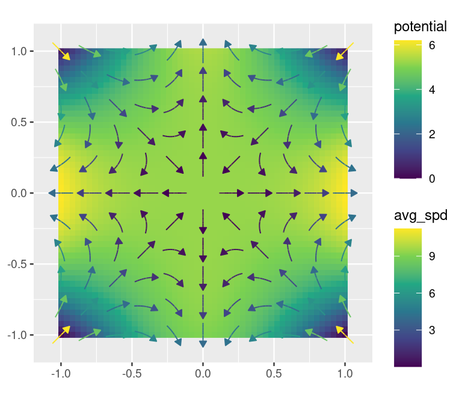
Figure 19: geom_potential() is the opposite of geom_gradient_field(): where the latter accepts a scalar field and plots a vector field, the former accepts a vector (gradient) field and plots the corresponding potential (scalar field).
A few more implementation notes may be helpful. Since R is not a symbolic language, geom_potential() finds the potential of a vector field by numerical methods rather than analytical ones. geom_potential() always works over a rectangular grid in the domain. To check whether the field is conservative, geom_potential() uses functions from numDeriv to approximate the Jacobian matrix of \(\mathbf{f}\) at each grid point. By comparing the off diagonal entries of this Jacobian, it checks whether \(\partial f_y/\partial x \approx \partial f_x/\partial y\) within a given tolerance. If the difference exceeds that tolerance anywhere in the grid, geom_potential() concludes that the curl is not negligible and warns that the field may be non-conservative. When the curl check passes, geom_potential() runs a crude but efficient trapezoid quadrature rule from a chosen reference corner \((x_{\min}, y_{\min})\) to each grid coordinate, thereby estimating a scalar value for the potential. This value is finally mapped to the fill aesthetic of a raster layer, producing a heatmap of \(\phi(x,y)\) across the specified domain.
In practice, many real-world vector fields may only be approximately conservative. If
geom_potential(verify_conservative = TRUE) detects any significant deviation from \(\partial f_y/\partial x = \partial f_x/\partial y\), it warns that the field may not be conservative, and thus the resulting potential surface should be interpreted with caution.
As a quick contrast, recall our rotational field \(\mathbf{f}(x,y) = (-y, x)\) from our first example. Because its curl is nonzero, geom_potential() produces a warning and the resulting “potential” surface is not meaningful physically, as shown here:
ggplot() +
geom_potential(fun = f, verify_conservative = TRUE) +
geom_vector_field(fun = f) +
scale_fill_viridis_c() +
scale_color_viridis_c() +
coord_equal()Warning: ! The provided vector field does not have a potential function
everywhere within the specified domain.
→ Ensure that the vector field satisfies the necessary conditions for
a potential function.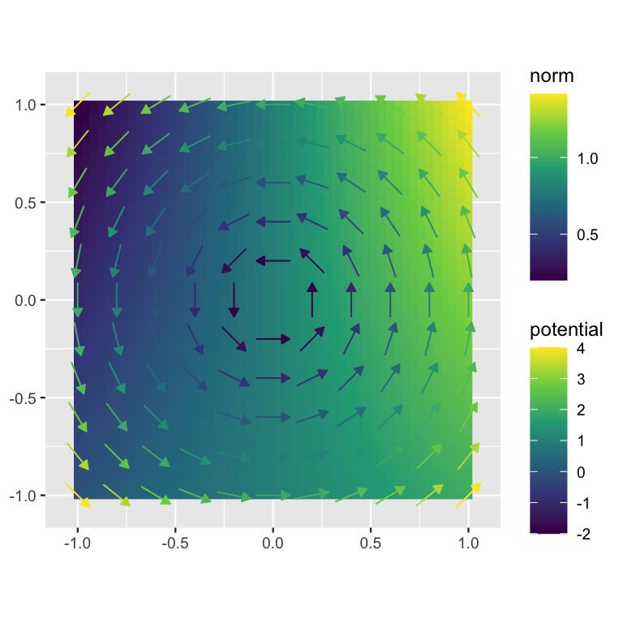
Figure 20: geom_potential checks if f(x, y) is conservative by evaluating ∂f_y/∂x - ∂f_x/∂y. A warning is issued if significant deviations occur.
We now turn our attention to further examples that illustrate the flexibility and power of ggvfields in handling more challenging vector field problems.
5 Further examples
We conclude with a few examples that illustrate the flexibility and power of ggvfields in handling more challenging vector field problems. These examples extend the methods described above to applications in differential equations and gradient-based optimization.
Slope field of a differential equation
One common example of vector fields in teaching differential equations is slope fields. For a simple differential equation \(y'(x) = f(x)\), the resulting vector field is independent of \(y\), and solution curves pass along the presented slopes. In this example, we visualize the slope field associated with the differential equation \(\frac{dy}{dx} = x^2 - x - 2\). By plotting the vector field corresponding to the slope at each point and overlaying solution curves, we can gain insight into the behavior different solutions. This is illustrated in Figure 21.
f <- function(u) {
x <- u[1]; y <- u[2]
c(1, x^2 - x - 2)
}
f_soln <- function(c = 0) function(x) x^3/3 - x^2/2 - 2*x + c
ggplot() +
geom_vector_field(fun = f, xlim = c(-10,10), ylim = c(-10, 10), arrow = NULL, n = 31, color = "gray70") +
geom_function(fun = f_soln( 4), aes(color = "+4"), xlim = c(-10, 10)) +
geom_function(fun = f_soln( 0), aes(color = " 0"), xlim = c(-10, 10)) +
geom_function(fun = f_soln(-4), aes(color = "-4"), xlim = c(-10, 10)) +
scale_color_manual("c", breaks = c("+4", " 0", "-4"), values = c("red", "steelblue", "springgreen3")) +
theme_minimal() + theme(panel.grid = element_blank(), axis.title = element_blank()) +
coord_cartesian(xlim = c(-5,5), ylim = c(-10,10)) 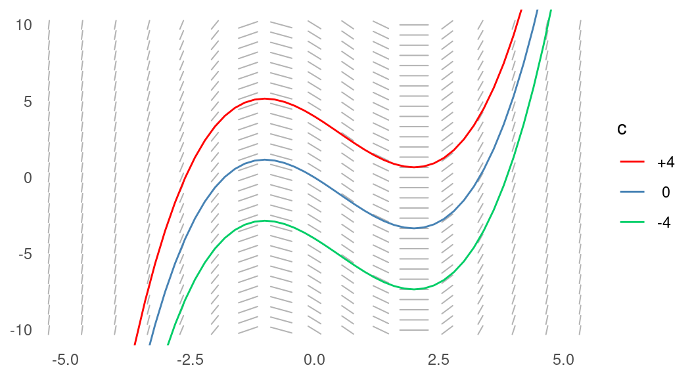
Figure 21: Slope field for the differential equation \(\frac{dy}{dx}=x^2-x-2\) with overlaid solution curves illustrating different constant integration values.
Gradient-based optimization algorithms
Figure 22 provides an example of how ggvfields can be used to visualize and teach optimization. In the example we construct a log-likelihood function for normally distributed data and compute its gradient field. Visualizing the resulting gradient flows using geom_stream_field() provides an intuitive view of how gradient-based optimization algorithms, such as gradient descent or Newton’s method, might navigate the parameter space by following the direction of steepest descent.
set.seed(1234)
library("scales")
# set parameters
mu <- 20.5; si <- 8.3
# generate data
n <- 200
x <- rnorm(n, mean = mu, sd = si)
# create log-likelihood function and estimate MLE
logL <- function(th) sum(dnorm(x, mean = th[1], sd = th[2], log = TRUE))
mle <- optim(c(0,1), logL, control = list("fnscale" = -1))$par
# visualize
ggplot() +
geom_gradient_field(fun = logL, xlim = c(15, 25), ylim = c(5, 15), type = "stream") +
scale_color_viridis_c(trans = "log", labels = number_format(accuracy = .1)) +
annotate("point", x = mu, y = si, color = "red", size = 3, shape = 17) +
annotate("point", x = mle[1], y = mle[2], color = "red", size = 3) +
labs("x" = expression(mu), "y" = expression(sigma), color = "Learning\nrate") +
coord_equal(xlim = c(15, 25), ylim = c(5, 15)) +
theme_minimal() + theme(legend.title = element_text(size = 10))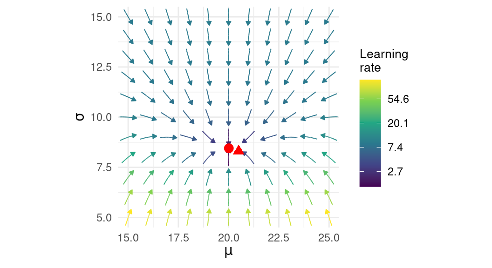
Figure 22: Gradient field of the log-likelihood for normal data of size n = 200. Red triangle marks the true parameter; red circle the MLE. The learning rate corresponds to what was previously labeled average speed.
Another example can be provided by Newton’s method of optimization. Newton’s method depends on local linear approximants to the gradient field, which can be solved to provide update directions. Specifically, if \(f(\mathbf{x})\) is a scalar field to be optimized, Newton proposes solving linear approximants to the gradient field \(\nabla f(\mathbf{x})\), i.e. \(\nabla{f}(\mathbf{x}) \approx \nabla{f}(\mathbf{x}_{0}) + \mathbf{H}(\mathbf{x}_{0})(\mathbf{x} - \mathbf{x}_{0}) =: \mathbf{L}_{\mathbf{x}_{0}}(\mathbf{x})\), where \(\mathbf{H}(\mathbf{x}_{0})\) is the Hessian of \(f(\mathbf{x})\), i.e. the Jacobian of its gradient. We can use ggvfields to visualize these two fields: the gradient field \(\nabla f(\mathbf{x})\), which is nonlinear in \(\mathbf{x}\), and the first order linear approximant \(\mathbf{L}_{\mathbf{x}_{0}}(\mathbf{x})\) by superimposing them with different color scales. This is illustrated in Figure 23. In this example we use geom_stream_field2(), suppressing speed information, in an attempt to visually simplify the graphic and focus on the direction of the field.
grad_field <- function(u) numDeriv::grad(logL, u)
Jf <- function(u) numDeriv::jacobian(grad_field, u)
# define linearization at x0
x0 <- c(17,12)
L <- function(u) grad_field(x0) + as.numeric( Jf(x0) %*% (u - x0) )
# compute newton direction
normalize <- function(x) x / sqrt(sum(x^2))
h <- solve( Jf(x0), -grad_field(x0) ) |> normalize() # newton direction
# make plot superimposing nonlinear vector field with linear approximant
ggplot() +
annotate("segment", x = x0[1], y = x0[2], xend = (x0+h)[1], yend = (x0+h)[2],
color = "red", arrow = arrow(type = "closed", length = unit(.02, "npc"))) +
annotate("point", x = x0[1], y = x0[2], size = 2, color = "red") +
geom_stream_field2(fun = grad_field, aes(color = "gf"), xlim = c(15, 25), ylim = c(5, 15)) +
geom_stream_field2(fun = L, aes(color = "lf"), xlim = c(15, 25), ylim = c(5, 15)) +
scale_color_manual(values = c("chocolate", "steelblue"),
labels = c(
expression(nabla*' '*log*' L'(mu*','*sigma)),
expression(bold('L')[mu[0]*','*sigma[0]](mu*','*sigma))
)
) +
labs("x" = expression(mu), "y" = expression(sigma)) +
coord_equal(xlim = c(15, 25), ylim = c(5, 15)) +
theme_minimal() + theme(panel.grid = element_blank(), legend.title = element_blank())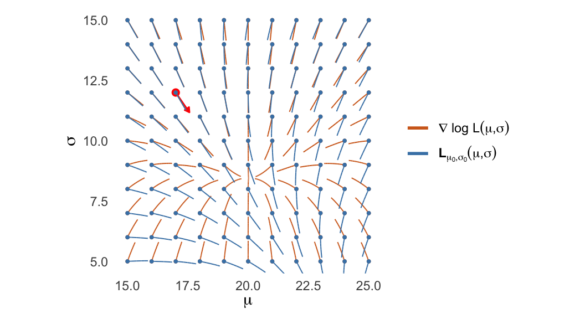
Figure 23: The linear approximant to a vector field aligns with the vector field it approximates near the approximating point, shown in red. Here the two vector fields of the gradient of the log-likelihood (\(L\); blue) and its linearization (orange) are superimposed. Overlapping indicates the vector field and its approximant are pointing in the same direction. The Newton update direction is illustrated with a red arrow. Note: minor numerical warnings issued by deSolve::ode() have been suppressed.
5.1 Related works
We have intentionally deferred discussing related works to the end of this manuscript in order to frame the problems and solutions in a way consistent with how we think about them; however, any user interested in ggvfields should be aware of a few other great tools that can be used for some of the kinds of things ggvfields can. This section considers five notable packages: metR, ggquiver, ggarchery, ggfields, and rasterVis–and contrasts their offerings with those of ggvfields.
1. metR. The metR package is designed for meteorological applications. It provides tools for geospatial and atmospheric data visualization. Its geom_streamline() function creates streamlines by first taking a regular rectangular grid of vector components (dx, dy) as input and using linear interpolation to estimate the vector field across the input data. The function then traces streamlines through the estimated field using forward Euler integration. While highly effective within its domain, its reliance on precomputed grids and structured data limits its flexibility for other types of visuals, e.g. stream normalizing and centering .
2. ggquiver. The ggquiver package offers geom_quiver() for visualizing vector fields as arrows. Like metR, it relies on a grid-based data input with defined vector components (dx, dy). While it produces visually clear and appealing quiver plots, the package’s functionality is limited to static vector visualizations. Its simplicity and clarity make it a practical choice for quick, grid-based visualizations in contexts like engineering and physics .
3. ggarchery. The ggarchery package introduces geom_arrowsegment() for creating customizable arrow segments. This feature enhances the aesthetics of vector plots by allowing users to control arrow placement, size, and style. Customization options, including flexible arrowheads and segment styles, make it suitable for crafting visually compelling arrows, but not plots per se . It may provide a good base for expansion of ggvfields in the future.
4. ggfields. The ggfields package provides tools to plot vectors on sf layers and also allows vector arrows to be added to plots with \(x\) and \(y\) data. It focuses on offering methods for overlaying vector field information onto spatial data visualizations within the ggplot2 framework. The package’s narrow focus limits its broad application to vector fields that are available in ggvfields, but its attention to details of transformations may be an improvement over ggvfields .
5. rasterVis. The rasterVis package in R also provides tools for visualizing vector fields through vectorplot() and streamplot() functions . These functions display stunning vector fields as arrows or streamlines, respectively, and are specifically designed to work with raster data in the lattice graphics system . While rasterVis effectively handles spatial vector data, perhaps its biggest difference from ggvfields is its reliance on lattice. This makes it less intuitive for users accustomed to ggplot2 workflows and simply a different tool.
6. Other Programming Environments. In addition to R packages, other programming languages provide tools for visualizing vector fields. Mathematica’s StreamPlot[] function dynamically generates streamlines for vector fields defined by user-defined functions , and we were interested to find a kind of convergent evolution between ggvfields and some of these functions. For example, earlier versions of Mathematica seem to have defaulted to rectangular grids, whereas now hexagonal grids seem to be the default. Similarly, Python’s Matplotlib library includes the streamplot function which visualizes 2D vector fields by integrating vector components over a grid; however, its computations in general are very different than those described here . Both tools share similarities with ggvfields in their ability to handle function-defined vector fields. These similarities from other coding languages highlight the need for more robust vector visualization tools in ggplot2 and a kind of cross-language learning.
Taken together, these packages demonstrate the wide interest in vector field visualization across domains—from meteorology and geospatial analysis to mathematical modeling. However, most are specialized for a particular context or input structure, and many are limited to a single type of visual representation.
The ggvfields package was designed to unify and extend these capabilities in a general-purpose tool, built entirely within the familiar grammar of graphics framework that ggplot2 provides. It supports a wide range of use cases by allowing users to define vector fields directly as functions or use precomputed grid data. The package offers both arrow-based and stream-based visualizations through a single consistent interface with multiple styles of glyphs available for use. Built-in features for normalization, centering, and scaling enhance communication, while flexible grid geometry options (including rectangular and hexagonal) expand control. Integration with ggplot2 enables layering, faceting, theming, and scale tuning in line with modern R workflows. This modular design makes ggvfields especially well suited for all domains.
By combining these capabilities in one package, ggvfields offers a unique and more comprehensive solution for vector field visualization in R, without the need to stitch together specialized tools or workflows.
6 Conclusion and future directions
The ggvfields package extends the capabilities of ggplot2 by providing a set of specialized geoms for visualizing vectors, vector fields, streamplots, and flowplots. Compared to other R tools, ggvfields offers a cohesive and customizable approach that easily integrates with the ggplot2 ecosystem. It supports a wide range of vector field types which include both Cartesian and polar encodings and provides built-in functionality for calculating field properties.
One of the planned enhancements is the development of geom_vector_smooth() which will bring the familiar functionality of geom_smooth() to vector data. This new geom will allow users to fit a smooth vector field to a set of observed vectors, similar to how geom_smooth() fits regression lines to scatter plots. The addition of geom_vector_smooth() will provide a powerful tool for users to explore trends and patterns in vector data, making it easier to represent and interpret the underlying structure of complex vector fields.
With these planned additions, ggvfields aims to become an even more versatile tool for vector field visualization and analysis in R. By continuing to expand its capabilities, the package will help users more effectively explore and communicate insights from complex vector data in a clear and intuitive manner.
6.1 CRAN packages used
ggvfields, plotly, ggplot2, ggdensity, ggdist, patchwork, grid, metR, deSolve, numDeriv, ggnewscale, ggquiver, ggarchery, ggfields, rasterVis, sf, lattice
6.2 CRAN Task Views implied by cited packages
ChemPhys, DifferentialEquations, DynamicVisualizations, Epidemiology, Hydrology, NetworkAnalysis, NumericalMathematics, Phylogenetics, Spatial, SpatioTemporal, TeachingStatistics, WebTechnologies
Notice that here we overload the notation \(f\) to identify \(\mathbf{u}\) with \(x\) and \(y\) so that \(f(\mathbf{u}) = f(x,y)\). This is relatively immaterial (even a bit pedantic) as a notational convention on paper; however, it is important in implementations as the relevant functions
fhave different arity:f(u)vsf(x,y). This is a common detail in R, which conventionally adopts thef(u)notation that assumes the function receives a vector argument. For example,optim()accepts functions that would be called asf(u), notf(x,y).↩︎We talk about other R packages in a later section that plot vectors and vector fields but all struggle with similar problems.↩︎
At the time of this writing, ggplot2 is more or less a closed canon, as development and maintenance resources are scarce.↩︎
Actually
stat_function(), but the difference is not material.↩︎There are some subtle differences between the meanings of “streamlines,” “streaklines,” and “pathlines” in the fluid dynamics literature, and our choice to call these “streams” is perhaps unfortunate, as they are more accurately “paths.” Nevertheless, we retain the current nomenclature because (1) “path” is already taken in the ggplot2 ecosystem, (2) other packages (e.g. metR) use the same nomenclature, and (3) for time-independent fluid flows (i.e. autonomous systems, like the framework above), the two are the same.↩︎
In fact, the implementation of
geom_vector()is a simple wrapper ofgeom_stream().↩︎A system of ODEs \(\mathbf{u}'(t) = \mathbf{F}(t, \mathbf{u})\) is autonomous if \(\mathbf{F}(t, \mathbf{u})\) is independent of \(t\), i.e. the system doesn’t involve any \(t\)’s on the right hand side that aren’t in \(\mathbf{u}(t)\).↩︎
Or more generally Lipschitz continuous in \((x,y)\), which would be the case if the functions have continuous first partial derivatives, for example.↩︎